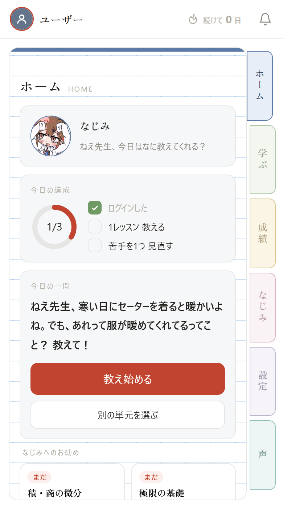
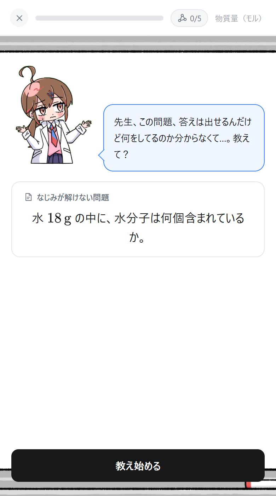
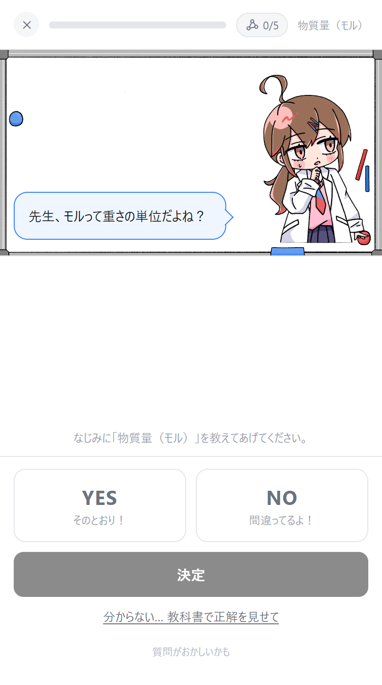
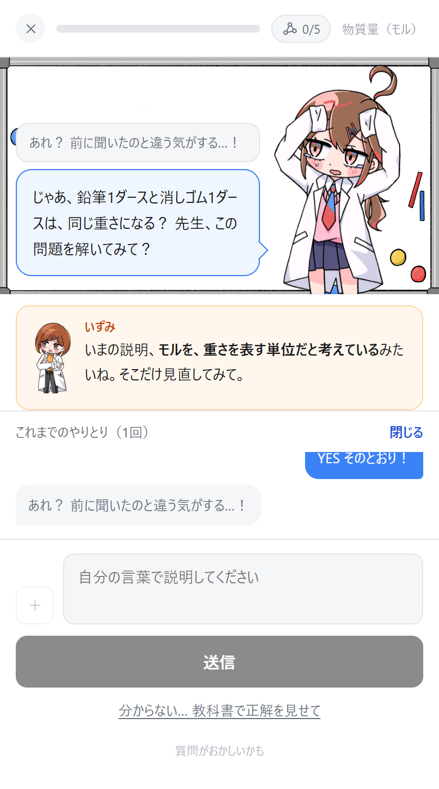
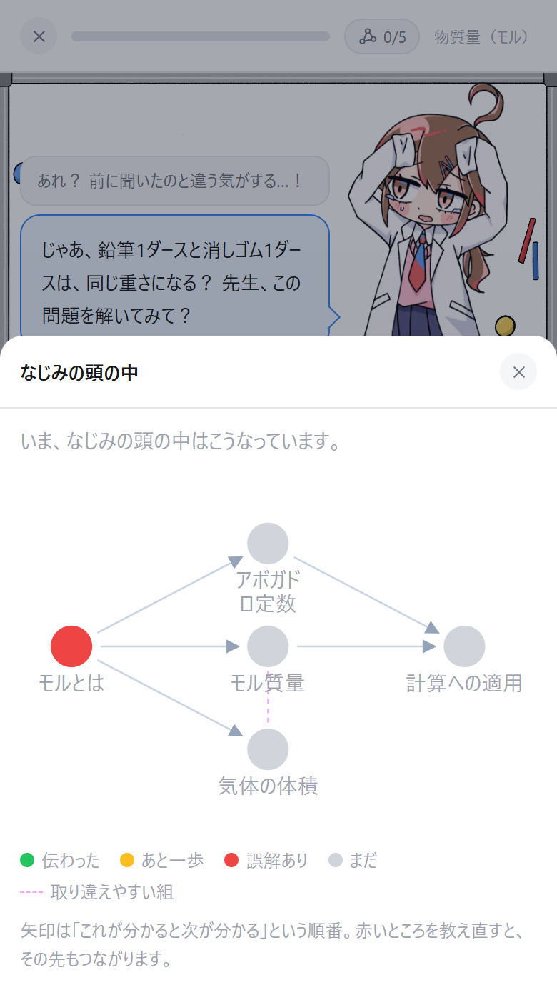

ホーム NajoshiteAI とは
解けることと、説明できることは、違います。
問題は解けるのに、「なぜそうするのですか」と聞かれると止まってしまう。手順だけを覚えていると、そういうことが起こります。
「わかったつもり」に気づくための道具です。
NajoshiteAI は、AI の生徒「なじみ」に勉強を教える学習アプリです。なじみは、わざと勘違いをしたまま質問をしてきます。それを正せるかどうかで、ご自身の理解が試されます。
教える側にまわると、どこを曖昧なままにしていたかが、はっきりと見えてきます。授業や参考書のかわりではありません。積み上げてきた知識を、外に出して確かめるための場所として作っています。
なじみは毎日、勘違いを含んだ質問を持ってきます。答えて直してあげるだけで、その日の復習になります。

教えて、直して、
気づきます。
ひとつの単元は、三つの手順をくり返して進みます。二択に当たっただけでは、先へは進めません。
-
01
わからない問題を持ってきます
「答えは出せるのですが、何をしているのか分かりません」。なじみはそう言って、解けない問題を見せてきます。ここからは、あなたが先生です。

-
02
二択、穴埋め、自分の言葉
ひとつの概念について、三段階で質問されます。最後はご自身の言葉で説明していただき、そこではじめて次に進みます。

-
03
勘違いの中身を、名前で教わります
採点役のいずみが「モルを、重さを表す単位だと考えているみたいね」のように、どこを取り違えていたのかを、その場で指摘します。

なじみの頭の中は、
いつでも見られます。
教えた内容がどうつながっているか、どこに誤解が残っているかが、そのまま図になります。
矢印は「これが分かると、次が分かる」という順番を表しています。赤いところを教え直すと、その先もつながっていきます。
どこから手をつければよいか迷ったときは、この図を見れば分かります。教える順番を、なじみのほうから教えてくれます。
単元が終わるのは、必須の概念をご自身の言葉で説明できたときだけです。
